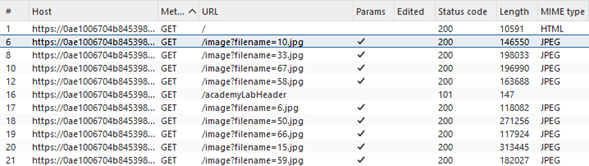
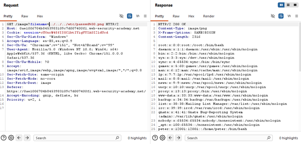
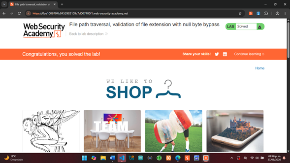

Laboratorio 06
File Path Traversal — Validation of File Extension With Null Byte Bypass
Explotación controlada de una vulnerabilidad File Path Traversal mediante el uso de un null byte para evadir la validación de extensión aplicada al nombre del archivo solicitado.
Objetivo
Identificar y explotar de manera controlada una vulnerabilidad
de File Path Traversal presente en la carga de imágenes de
una aplicación web. Mediante Burp Suite, se analizó y modificó una
petición HTTP para manipular el parámetro filename.
Debido a que la aplicación comprueba que el archivo solicitado
termine con una extensión de imagen permitida, se utilizó un
null byte antes de la extensión esperada para evadir dicha
validación y acceder al archivo /etc/passwd.
Desarrollo
El laboratorio se realizó en PortSwigger Web Security Academy
utilizando Burp Suite Community Edition. Desde el navegador
integrado de Burp Suite se accedió a la instancia del laboratorio y
se analizaron las peticiones HTTP generadas por la aplicación.
En Proxy > HTTP history se identificó que las imágenes de
los productos eran solicitadas mediante peticiones GET al
endpoint /image, utilizando el parámetro filename
para especificar el archivo que debía recuperar el servidor.
Se observó que las solicitudes legítimas utilizaban nombres de
archivos correspondientes a imágenes. Por ejemplo:
GET /image?filename=10.jpg

Análisis de la petición con Repeater
La petición seleccionada se envió al módulo Repeater,
permitiendo modificar manualmente sus parámetros y reenviarla
al servidor para analizar los cambios producidos en la respuesta.
En este laboratorio, la aplicación implementaba una validación
sobre la extensión del archivo proporcionado mediante el parámetro
filename. Por esta razón, proporcionar directamente una
ruta como ../../../etc/passwd no permitía superar la
comprobación de extensión.
Para evadir esta validación se utilizó un null byte,
representado mediante %00, seguido de una extensión
aparentemente válida.
Bypass de la validación mediante null byte
Se sustituyó el valor original del parámetro filename
por el siguiente payload:
../../../etc/passwd%00.png
Las secuencias ../../../ permiten retroceder dentro de la
estructura de directorios con el objetivo de alcanzar el archivo
/etc/passwd.
Al final de la ruta se añadió %00.png. El valor
%00 representa un null byte codificado en la URL,
mientras que .png proporciona la extensión que la
aplicación espera encontrar durante la validación.
En el entorno vulnerable del laboratorio, esta diferencia entre
la validación de la cadena y su procesamiento posterior permite
que la extensión aparentemente válida sea ignorada al recuperar
el recurso, haciendo posible acceder a /etc/passwd.

Después de enviar la petición modificada, el servidor respondió
con HTTP/2 200 OK y devolvió en el cuerpo de la respuesta
información correspondiente al archivo /etc/passwd.
La recuperación del archivo confirmó que la validación de extensión
podía ser evadida mediante el null byte. Aunque la entrada incluía
la extensión .png, el procesamiento posterior permitió que
el recurso recuperado correspondiera al archivo
/etc/passwd.
Confirmación del laboratorio
Finalmente, PortSwigger Web Security Academy reconoció la recuperación correcta del archivo solicitado y marcó el laboratorio como Solved, confirmando que el objetivo de la práctica había sido completado satisfactoriamente.

Resultados
Se explotó exitosamente una vulnerabilidad de
File Path Traversal presente en el mecanismo de carga de
imágenes de la aplicación.
Mediante la modificación del parámetro filename con el
payload ../../../etc/passwd%00.png, se comprobó que la
validación de extensión podía ser evadida utilizando un
null byte antes de la extensión esperada.
El servidor respondió con HTTP/2 200 OK y mostró el
contenido del archivo /etc/passwd, demostrando que la
validación implementada era insuficiente para impedir el acceso
a archivos fuera del directorio autorizado.
Finalmente, PortSwigger Web Security Academy validó la explotación
y marcó el laboratorio como Solved.
Conclusión
El laboratorio permitió comprender que validar únicamente la
extensión incluida al final de una entrada no garantiza que el
recurso procesado por la aplicación corresponda realmente al
tipo de archivo esperado.
Mediante Burp Suite fue posible identificar el parámetro
filename, modificar su valor y utilizar el null byte
representado mediante %00 para comprobar el comportamiento
de la validación de extensión implementada por la aplicación.
La recuperación de /etc/passwd demostró la importancia
de validar la ruta y el archivo que finalmente serán procesados,
evitando diferencias entre la comprobación realizada sobre la
entrada y su interpretación posterior.
La actividad también permitió reforzar el uso de
HTTP History y Repeater para analizar, modificar
y comprobar el comportamiento de peticiones HTTP durante
pruebas controladas de seguridad web.